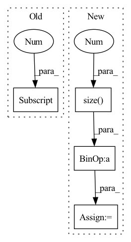

Pattern ID :1907
Before Change
if self.version == "B0":
if self.training:
var = x.var([0,2,3])
self.running_var = (self.momentum * self.running_var) + (1.0-self.momentum) * (x.shape[0]/(x.shape[0] -1)*var)
else:
var = self.running_var
sigma = var.view([1, self.insize, 1, 1]).expand_as(x)
After Change
exponential_average_factor = self.momentum
if self.training:
var = x.var([0, 2, 3], unbiased=False)
n = x.numel() / x.size(1 )
with torch.no_grad():
self.running_var = exponential_average_factor * var * n / (n - 1)\
+ (1 - exponential_average_factor) * self.running_var
In pattern: SUPERPATTERN
Frequency: 3
Non-data size: 4
Instances Fragment ID: 7251886
Project Name: digantamisra98/evonorm
Commit Name: e64df8c7cc70ac2bb49fc1ec7d479cd1a07ebbef
Time: 2020-04-08
Author: mishradiganta91@gmail.com
File Name: evonorm2d.py
M Class Name: EvoNorm2D
N Class Name: EvoNorm2D
M Method Name: forward(2)
N Method Name: forward(2)
M Parent Class: nn.Module
N Parent Class: nn.Module
M File Name: evonorm2d.py
N File Name: evonorm2d.py
M Start Line: 51
M End Line: 57
N Start Line: 42
N End Line: 60
Before Change
total_loss = 0
// predict = F.softmax(predict, dim=1)
for i in range(target.shape[1] ):
if i != self.ignore_index:
dice_loss = dice(predict[:, i], target[:, i])
if self.weight is not None:After Change
dice += 2 * (pred[:,i] * target[:,i]).sum(dim=1).sum(dim=1).sum(dim=1) / (pred[:,i].pow(2).sum(dim=1).sum(dim=1).sum(dim=1) +
target[:,i].pow(2).sum(dim=1).sum(dim=1).sum(dim=1) + smooth)
// 返回的是dice距离
dice = dice / pred.size(1 )
return torch.clamp((1 - dice).mean(), 0, 1)
class ELDiceLoss(nn.Module):
def __init__(self): Fragment ID: 7251883
Project Name: lee-zq/3dunet-pytorch
Commit Name: 070a8816879b33e97a9541e35cc5b2bfaf1bcd76
Time: 2021-05-22
Author: zq_lee@163.com
File Name: utils/loss.py
M Class Name: DiceLoss
N Class Name: DiceLoss
M Method Name: forward(3)
N Method Name: forward(3)
M Parent Class: nn.Module
N Parent Class: nn.Module
M File Name: utils/loss.py
N File Name: utils/loss.py
M Start Line: 78
M End Line: 93
N Start Line: 18
N End Line: 27
Before Change
self.num_iterations = num_iterations
def forward(self, x):
batch_size = x.shape[0]
// x: (batch_size, num_route_nodes, in_channels)
// route_weights: (num_route_nodes, num_capsules, in_channels, out_channels)
// u_hat: (batch_size, num_capsules, num_route_nodes, out_channels)
u_hat = torch.einsum("ijk, jlkm -> iljm", x, self.route_weights)After Change
requires_grad=True)
def forward(self, x):
batch_size = x.size(0 )
// (batch_size, in_caps, in_dim) -> (batch_size, 1, in_caps, in_dim, 1)
x = x.unsqueeze(1).unsqueeze(4)
//
// W @ x =
// (1, num_caps, in_caps, dim_caps, in_dim) @ (batch_size, 1, in_caps, in_dim, 1) =
// (batch_size, num_caps, in_caps, dim_caps, 1)
u_hat = torch.matmul(self.W, x)
// (batch_size, num_caps, in_caps, dim_caps)
u_hat = u_hat.squeeze(-1)
// detach u_hat during routing iterations to prevent gradients from flowing
temp_u_hat = u_hat.detach()
b = torch.zeros(batch_size, self.num_caps, self.in_caps, 1).to(self.device)
for route_iter in range(self.num_routing - 1):
// (batch_size, num_caps, in_caps, 1) -> Softmax along num_caps
c = b.softmax(dim=1)
// element-wise multiplication
// (batch_size, num_caps, in_caps, 1) * (batch_size, in_caps, num_caps, dim_caps) ->
// (batch_size, num_caps, in_caps, dim_caps) sum across in_caps ->
// (batch_size, num_caps, dim_caps)
s = (c * temp_u_hat).sum(dim=2)
// apply "squashing" non-linearity along dim_caps
v = squash(s)
// dot product agreement between the current output vj and the prediction uj|i
// (batch_size, num_caps, in_caps, dim_caps) @ (batch_size, num_caps, dim_caps, 1)
// -> (batch_size, num_caps, in_caps, 1)
uv = torch.matmul(temp_u_hat, v.unsqueeze(-1))
b += uv
// last iteration is done on the original u_hat, without the routing weights update
c = b.softmax(dim=1)
s = (c * u_hat).sum(dim=2)
// apply "squashing" non-linearity along dim_caps
v = squash(s)
Fragment ID: 7251888
Project Name: riroaki/capsnet
Commit Name: e62f83faad1731befd8a1e434aaf902e2140aecb
Time: 2020-03-08
Author: aki@akideMacBook-Pro.local
File Name: capsnet.py
M Class Name: DigitCaps
N Class Name: DigitCaps
M Method Name: forward(2)
N Method Name: forward(2)
M Parent Class: nn.Module
N Parent Class: nn.Module
M File Name: capsnet.py
N File Name: capsnet.py
M Start Line: 50
M End Line: 79
N Start Line: 59
N End Line: 93